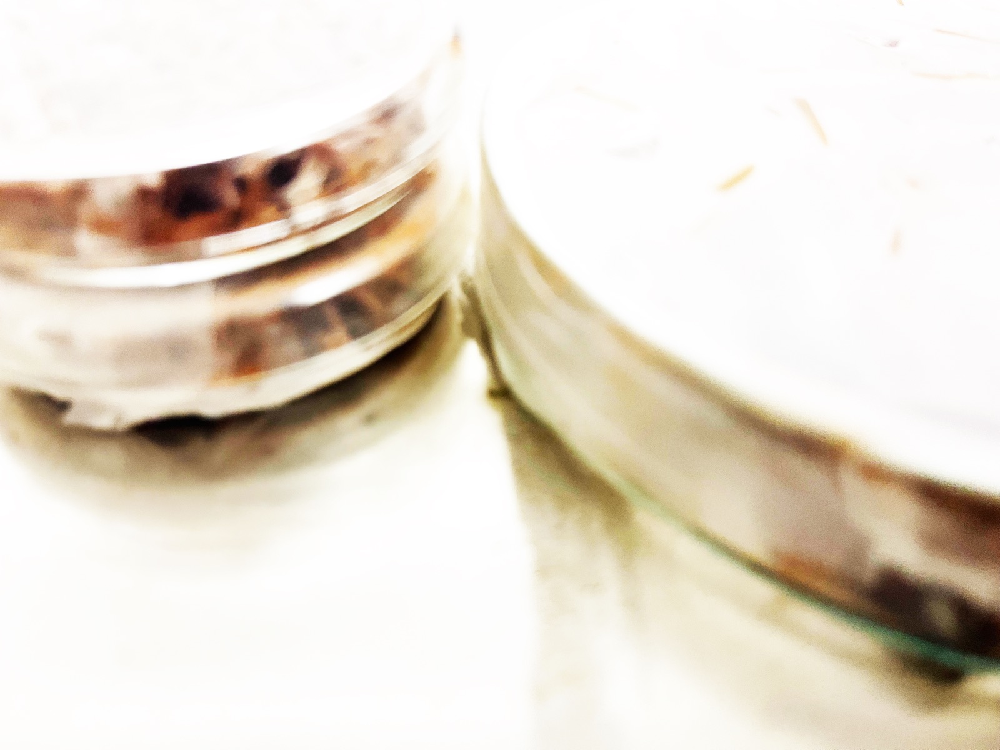
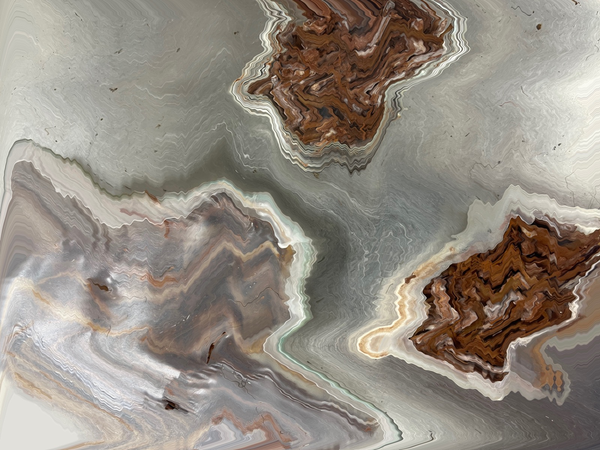
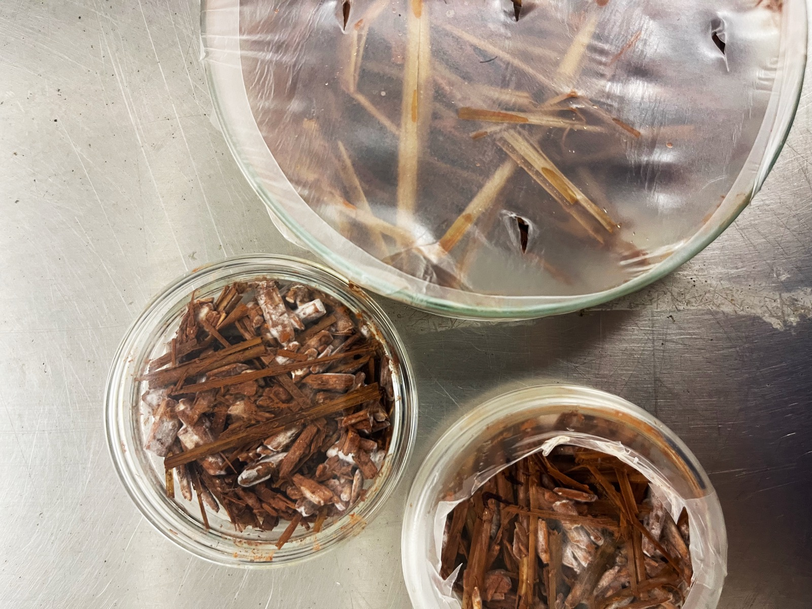
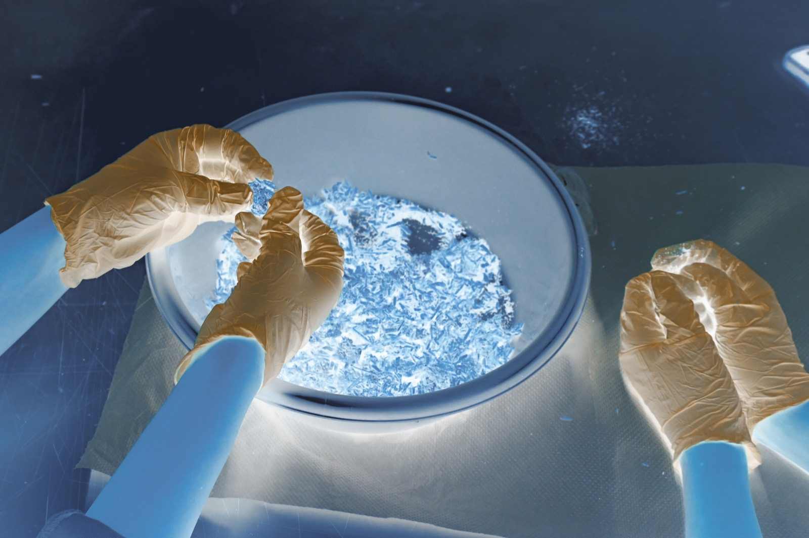
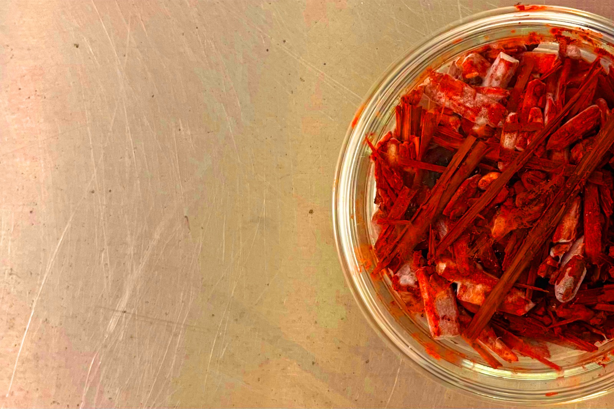
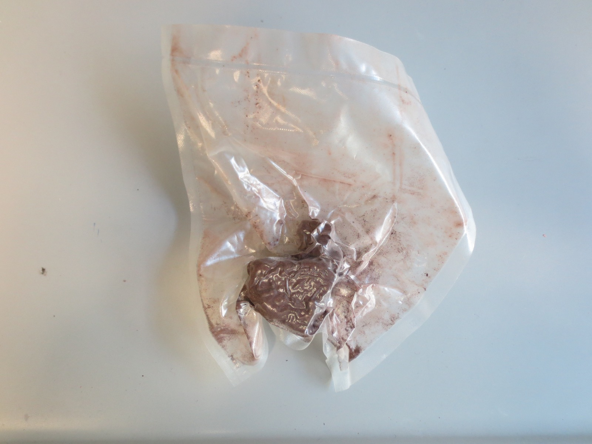

Material Dialogue is a research project that investigates the material relationship between a living organism, mycelium, and red mud, an anthropogenic byproduct of aluminum production known for its toxicity. The project explores whether mycelium can grow on this industrial residue and how such interaction might generate new material conditions, both structurally and symbolically.
The work is grounded in hands-on experimentation. Through a series of tests with varying ratios and environmental conditions, the project examines how biological systems behave when exposed to contaminated substrates. Rather than aiming to control outcomes, it embraces undesigned processes, using failure, mutation, and adaptation as part of the material inquiry.
By bringing together organic growth and industrial waste, Material Dialogue challenges conventional boundaries between what is considered natural or artificial, useful or discarded. It frames the encounter not as a solution but as a space of unmaking, where inherited systems of production, waste, and value can be questioned and reconfigured.
The project remains open-ended and process-led, with an emphasis on transparency and knowledge sharing. It invites further experimentation around sustainable materials, and reflects on how design practices can evolve through collaboration with non-human agents, shifting from extraction to coexistence.





